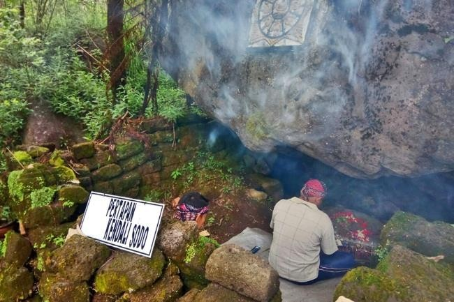
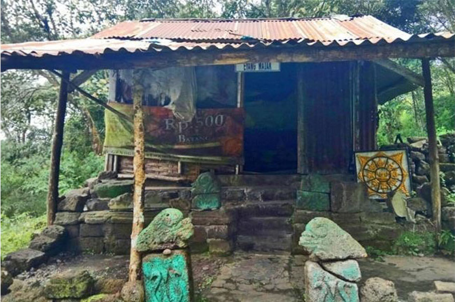
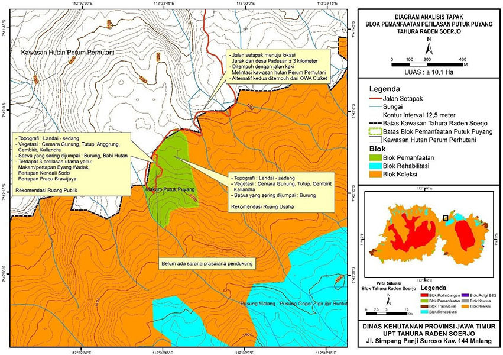

Tahukah kalian bahwa area wisata petilasan Putuk Puyang merupakan salah satu bagian tempat wisata yang berada di kawasan Taman Hutan Raya Raden Soerjo yang berada di kawasan Tahura Raden Soerjo pada posisi 7° 42’ 3,262” – 7° 42’ 21,463 LS dan 112° 32’ 41,125” – 112° 32’ 51,288” BT dengan luas ± 10,1 hektar. Secara administratif, terletak di wilayah Kabupaten Mojokerto Kecamatan Pacet Desa Padusan. Blok pemanfaatan ini memiliki topografi datar, landai. Pada areal datar dan landai sangat strategis untuk pembangunan sarana dan prasarana kegiatan pariwisata alam seperti Camping Ground dan Outbound.
Tutupan lahan yang ada di blok ini antara lain jenis Cemara Gunung, Kaliandra, Cembirit, Anggrung, Tutup, Kesek, Bambu dengan tutupan lahan ± 90%.
Bila anda beruntung maka anda akan bisa melihat Kijang dan Burung yang berada di kawasan Petilasan Putuk Puyang.

Menurut cerita yang berkembang di masyarakat sekitar Petilasan Putuk Puyang merupakan situs peninggalan kerajaan Majapahit yang berada di Desa Padusan Kecamatan Pacet Kabupaten Mojokerto. Untuk menuju lokasi ini ditempuh dengan berjalan kaki dengan jarak ± 3 kilometer dari batas desa Padusan tepatnya di bawah Makam Krapyak yang berada di kawasan Hutan Perum Perhutani. Jarak ini ditempuh selama 2 jam perjalanan dengan medan agak berat. Sebagian besar pengunjung di lokasi ini banyak melakukan kegiatan ritual kepercayaan. Hal ini dilihat dari banyaknya sesaji yang berada di areal situs.

Berdasarkan letak geografisnya, berikut ini adalah Peta Deskripsi Analisis Tapak Pengelolaan Lokasi Pariwisata Petilasan Putuk Puyang.
Pada areal memiliki potensi yang menarik bila dibangun sarana wisata alam dengan tidak merubah bentang alam, terlebih ketersediaan air yang cukup banyak di areal ini, memiliki view pemandangan alam yang indah dan udara yang sejuk segar.